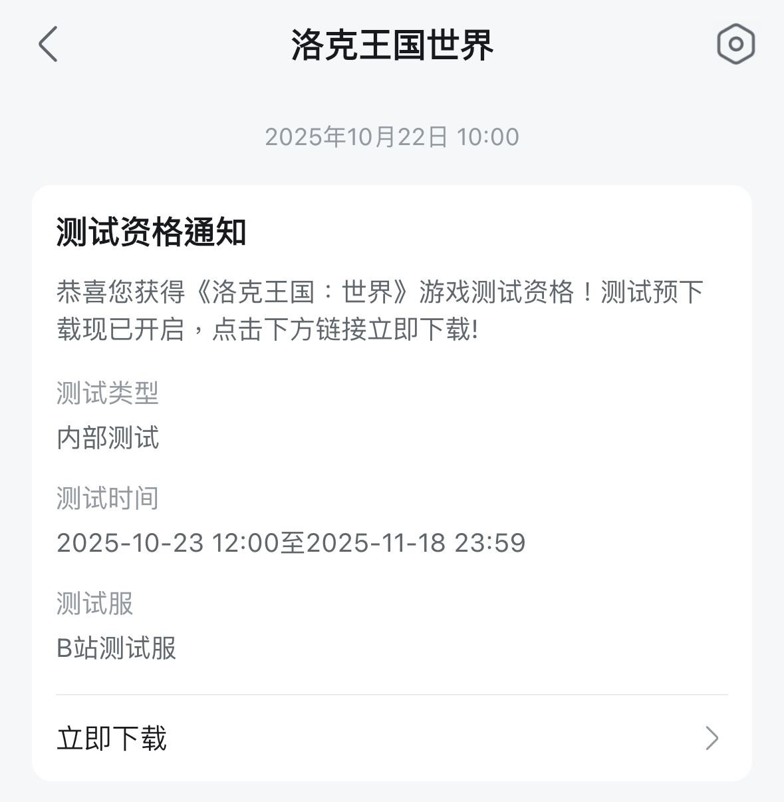
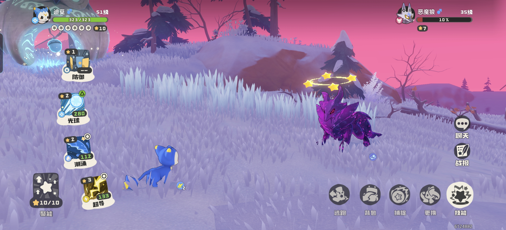

測試環境
Major
| 遊戲名稱 | 洛克王國世界 |
|---|---|
| 遊戲版本 | Beta |
| 測試平台 | PC（Windows 用戶端） |
| 作業系統 | Windows 10 |
| 回報者 | Steven Tsang |
重現步驟
- 於野外持續捕捉同一隻精靈，誘發「污染精靈」事件生成。
- 進入遭遇戰並將污染精靈擊暈，觸發污染判定（依機率產生：污染褪色、保留污染、或轉為異色）。
- 擊暈後污染未褪去，但捕捉介面中的精靈頭像卻顯示為「異色」狀態。
- 因頭像與實體外觀不一致而被誤判，最終該精靈於操作過程中遭擊殺，無法完成捕捉。
預期結果 vs 實際結果
預期結果
污染事件結束後僅有三種明確結果（污染褪色、保留污染、或轉為異色），且實體狀態應與頭像顯示一致。
實際結果
精靈本體保留污染狀態，但頭像卻顯示為異色，兩者不一致，容易造成玩家誤判並錯失捕捉時機。
影響描述
狀態顯示與實際結果不一致，直接影響玩家對捕捉結果的判斷，可能造成稀有「異色／污染」精靈被誤殺而損失，屬於產品體驗與資料一致性問題。
截圖 / 影片

